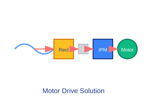

Industrial motor drive applications demand high performance, reliability, and precision in controlling electric motors. Semikron's motor drive solutions are designed to deliver exceptional dynamic response, efficiency, and robustness required in demanding industrial environments. Our components address the diverse requirements of servo drives, variable frequency drives (VFDs), and specialized motion control systems. With extensive experience in motor drive applications, we provide complete solutions from high-power modules for large industrial drives to compact IPM solutions for integrated servo systems. Our products are engineered to handle the thermal cycling, electrical stress, and environmental variations common in industrial applications.
Fast switching technology for precise motor control
Designed for harsh factory environments
Solutions from servo drives to large VFDs
Typical power electronics configuration for motor drive applications

The input rectifier stage converts AC line voltage to DC for the inverter. This stage may be passive (diode bridge), active (IGBT-based), or include power factor correction depending on the application requirements. Semikron offers both standard bridge rectifiers and active front-end solutions.
The inverter stage converts DC power to variable frequency AC for motor control. This stage requires precise timing control and fast switching capability for optimal motor performance. The choice of topology (2-level, 3-level) depends on power level and performance requirements.
Optimal Semikron components for motor drive applications
Standard solution for industrial VFDs
Voltage: 600V - 1700V
Current: 50A - 400A
Topology: Phase Leg, Dual Phase Leg
Compact IPM solution for servo drives
Voltage: 600V - 1200V
Current: 50A - 300A
Integration: Driver and protection integrated
Key factors for motor drive electronics design
Motor drives require careful balance between switching losses and output quality. Higher switching frequencies reduce motor losses and acoustic noise but increase semiconductor losses. Semikron's IGBT technology optimizes this trade-off for common motor drive switching frequencies.
Long motor cables create reflected waves that can stress motors and potentially damage power semiconductors. Proper filter design and cable selection is critical to ensure reliable operation and motor longevity.
Motor drives must handle rapid load changes with precise speed or torque control. Power semiconductors must withstand the electrical stress of dynamic operation without compromising reliability.
Motor drives often operate in high-ambient temperature environments. The thermal design must account for both continuous operation and short-term overload conditions.
Technical resources for motor drive designs
Implementation of Semikron solutions in precision motion control
The client required a high-performance servo drive for precision positioning in an automated manufacturing system. The drive needed to deliver high dynamic response with minimal size and acoustic noise.
Semikron MiniSKiiP system was selected for its compact size and integrated driver functionality. The IPM solution reduced external component count while providing the fast switching required for precision control.
The implementation achieved 0.1% speed regulation and reduced system size by 40% compared to discrete component solutions. The integrated protection features simplified the safety system design.
Essential components for motor drive systems
Comprehensive documentation for motor drive designs
Our FAE team specializes in motion control electronics applications
Contact Drive Experts
FAE Technical Commentary
Expert insights on motor drive applications
For high-dynamic applications, we recommend SEMiX modules with fast IGBT technology that support switching frequencies up to 16kHz. The low saturation voltage and optimized tail current characteristics provide excellent performance for precise motor control.
When acoustic noise is critical, consider using MiniSKiiP systems with their integrated driver optimization. The matched driver/power module combination minimizes switching oscillations that contribute to audible noise.
For servo applications with high overload requirements, ensure adequate thermal design to handle temporary overcurrent conditions. Semikron's thermal models can help predict junction temperature during these conditions.